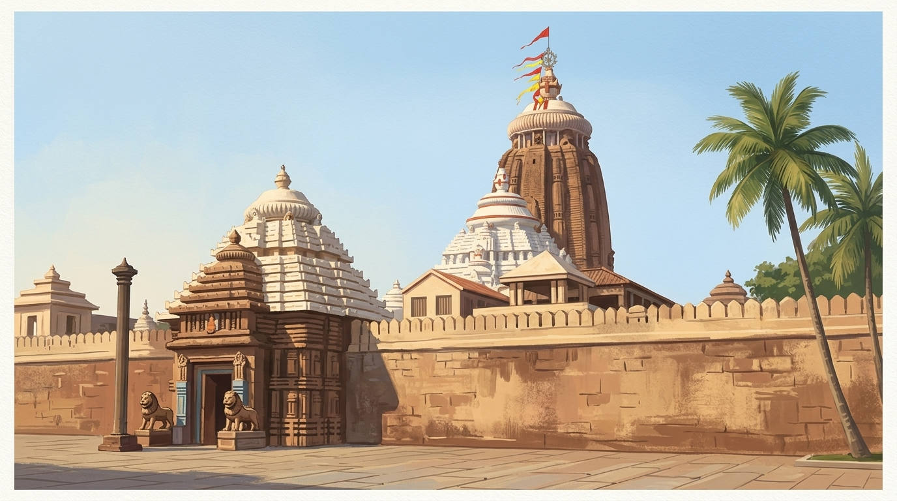
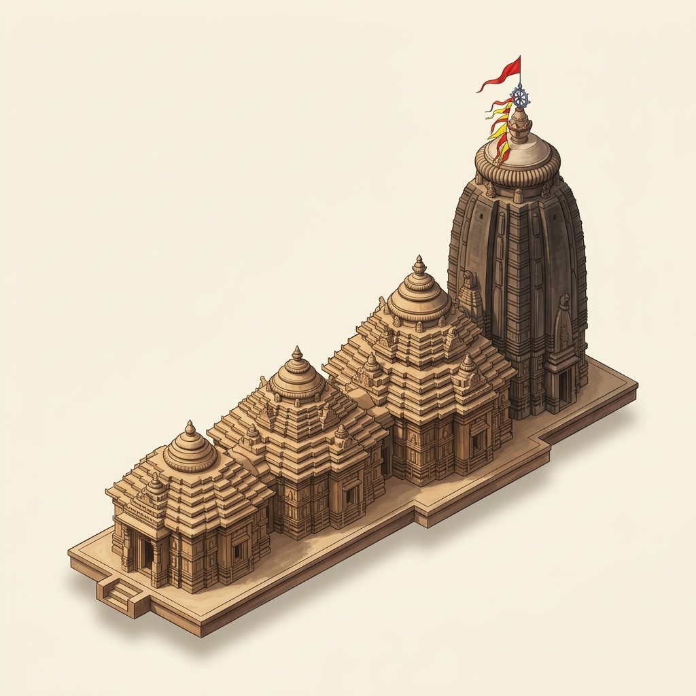

K.C. Panigrahi explained that the temple's god was meant to live in state, like a king. So the god needed halls, such as an audience hall (jagamohana) and a dance hall (natamandira).

Puri
Jagannath Temple, Puri
The great temple of Jagannath at Puri, built by kings of the Ganga dynasty. Percy Brown called it a larger building than Bhubaneswar's Lingaraja.
Start the tour ↓Stop 1 of 4
Meet the temple

- When?
late 11th–12th century CE
How do we know?
The present temple was built in the late 11th or the 12th century CE. Scholars give different years for it.
No foundation inscription was seen. Brown: about 1100 CE, with 'records' that it was not consecrated until 1118 CE. Ganguly: within Chodaganga's reign, so between 1075 and about 1145 CE. Panigrahi: 12th century, under Chodaganga. Fergusson (1876): begun soon after the Ganga kings took power in 1131. No opened source gives the often-repeated 1112 CE start.
- In whose time?
Ganga dynasty (Anantavarman Chodaganga)
How do we know?
It was built by kings of the Ganga dynasty. Historians name King Anantavarman Chodaganga as the builder of the present temple.
Ganguly reads the builder's name, Gangesvara (Chodaganga), from a couplet in later Ganga copper-plate grants; the plates themselves were not opened. Popular tradition names Anangabhima instead (see construction).
- For which god?
Jagannath, with Balabhadra and Subhadra
How do we know?
The temple is dedicated to Jagannath. He is worshipped together with his brother Balabhadra and his sister Subhadra.
- Temple type?
pancharatha deul
How do we know?
According to M.M. Ganguly, the main shrine is a pancharatha deul (a tower whose walls step out in five vertical bands on each side).
Ganguly: 'It is a pancharatha dewl', its corner projection showing 9 tiers. That this is the main Jagannath tower is read from context (the passage sits in his Jagannath section, between the enclosure description and the height survey of 'the vimana').
King Anantavarman Chodaganga ruled a large kingdom, from the Godavari river to the Hooghly river. Historian K.C. Panigrahi says he built the present temple.
Two scholars linked the temple to a victory. James Fergusson (1876) thought the Ganga kings built it at once to celebrate winning power. Percy Brown thought a victory pillar probably stood here first.
For curious grown-ups
Interpretations. Fergusson: the Ganga kings replaced the Kesaris in 1131 and 'set to work at once to signalise their triumph'. Brown: 'The probability is' that the conqueror raised a commemorative column here, replaced about 1100 by the present temple. No inscription seen supports either.
M.M. Ganguly wrote that Puri was a holy place long before the present temple. He noted an inscription dated 1104 CE that already mentions Purushottama, a name of Puri's god.
For curious grown-ups
Ganguly cites the Nagpur Prasasti of a Malava ruler, dated 1104 CE. The inscription's own edition was not opened.
Historian K.C. Panigrahi thought King Yayati I built an earlier Jagannath temple here in the 10th century CE. He wrote that nothing of it can be seen now.
For curious grown-ups
The Yayati I attribution is Panigrahi's, partly based on the Madala Panji chronicle, which he says confuses the two Yayatis. Ganguly agrees an earlier temple stood here but names no builder. Unproven.
- Jagannath Temple, Puri: about 65 m (215 ft), Ganguly's survey
- An adult person: about 1.7 m
- A five-storey building: about 15 m (an assumed height, shown for scale)
About 4.4 times as tall as a five-storey building.
Stop 2 of 4
How it was built
According to popular tradition, King Anangabhima built the temple. Historians M.M. Ganguly and K.C. Panigrahi credit Chodaganga, with Anangabhima adding to it later.
For curious grown-ups
Ganguly: popular belief credits 'Anianka Bhim Deva, the 5th king of the Ganga dynasty', but the copper-plates place the temple earlier; Anangabhima's name probably survives because he built 'the important appurtenances'. Panigrahi: built by Chodaganga 'and his successor Anangabhima in the twelfth century'. Which Anangabhima is not settled; no opened source says it was completed under Anangabhima III.
Percy Brown wrote that at first the temple had only the tower shrine and its porch hall. He thought the dance hall and offering hall were added in the 14th or 15th century CE.
For curious grown-ups
Ganguly (OCR leaf 488) reports that the offering hall and the inner wall are ascribed to King Purushottama Deva, of the later 15th century; that is a chronicle attribution.
Percy Brown thought sea air probably decayed the old stonework. Later repairs covered the tower with cement. Brown felt the cement made it look heavy.
A photograph caption in Percy Brown's book points out iron beams in the dance hall ceiling. In 1912, M.M. Ganguly described steel beams and old rails holding up the lowest layer of the porch hall's roof.
For curious grown-ups
Brown's caption does not say whether the iron beams are original or later. Ganguly's steel beams and rail columns are modern supports.
Stop 3 of 4
The parts
More to spot
The temple has four buildings in one straight line: the tower shrine, the porch hall, the dance hall and the offering hall. Together they are about 94 m (310 ft) long.
A high outer wall of laterite stone surrounds the temple grounds. It is about 6–7 m (20–24 ft) high and about 203 m by 195 m (665 by 640 ft).
For curious grown-ups
Laterite is named by Ganguly only. The inner enclosure is 420 by 315 ft in Ganguly and Fergusson but 440 by 350 ft in Brown. Brown also speaks of three encircling walls, 'the Three Garlands'; Ganguly and Fergusson describe two.
The outer wall has a gate on each of its four sides. The eastern gate, thought of as the most important, is the Lion Gate. Two huge lion figures stand on either side of it.
See 4 more
A tall stone pillar stands in front of the eastern gate. M.M. Ganguly and Percy Brown both say it was brought here from the Sun Temple at Konark.
For curious grown-ups
Ganguly calls it the Aruna-stambha and gives its total height as 34 feet (OCR leaf 494). No source seen dates the move.
Percy Brown wrote that some 30 or 40 smaller shrines stand around the main temple, inside the walls.
The dance hall's roof rests on 16 pillars in four rows. Percy Brown called it the only true pillared hall of this kind in Odisha.
Percy Brown noted that the temple stands on raised ground. Its tall tower is a landmark across the flat land for many kilometres around.
Stop 4 of 4
Its family
Percy Brown wrote that the temple follows the same plan as Bhubaneswar's Lingaraja temple. K.C. Panigrahi thought the Ganga kings wanted to match or outdo the builders of Lingaraja.
Percy Brown saw progress in its design. He found the tower's outline improved, with a more graceful curve at its shoulder than at Lingaraja.
Percy Brown noticed that its gateways and walled courtyards resemble South Indian temple plans of the same period. He thought this was more than a coincidence.
For curious grown-ups
Brown compares the principle (gateways and extra enclosures, like Dravidian pylons and prakarams), not the look: he says the gateways 'bear no resemblance to the gopuram type'.
The Puri temple is older than the Sun Temple at Konark. M.M. Ganguly pointed to a carving of Jagannath found in Konark's ruins as one sign of this.
For curious grown-ups
Brown dates Puri to about 1100 CE and Konark to the 13th century. Fergusson (1876) had the order the other way round.
Sources & evidence
- Established: old records (inscriptions, digs, ASI/UNESCO) say so, and experts agree. Established: old records (inscriptions, digs, ASI/UNESCO) say so, and experts agree.
- Scholarly view: experts' best reading of the clues. Scholarly view: experts' best reading of the clues.
- Debated: sources disagree, or it rests on tradition. Debated: sources disagree, or it rests on tradition.
- Krishna Chandra Panigrahi. Archaeological Remains at Bhubaneswar, Orient Longmans, Bombay (1961). https://archive.org/details/in.ernet.dli.2015.111041 (full text, archived copy)
- Percy Brown. Indian Architecture (Buddhist and Hindu Periods), D.B. Taraporevala Sons & Co., Bombay (1959). https://archive.org/details/dli.csl.8666 (full text, archived copy)
- Mano Mohan Ganguly. Orissa and Her Remains, Ancient and Mediaeval, Thacker, Spink & Co., Calcutta (1912). https://archive.org/details/in.ernet.dli.2015.536395 (full text, archived copy)
- James Fergusson. History of Indian and Eastern Architecture, John Murray, London (1876). https://archive.org/details/in.ernet.dli.2015.62030 (full text, archived copy)